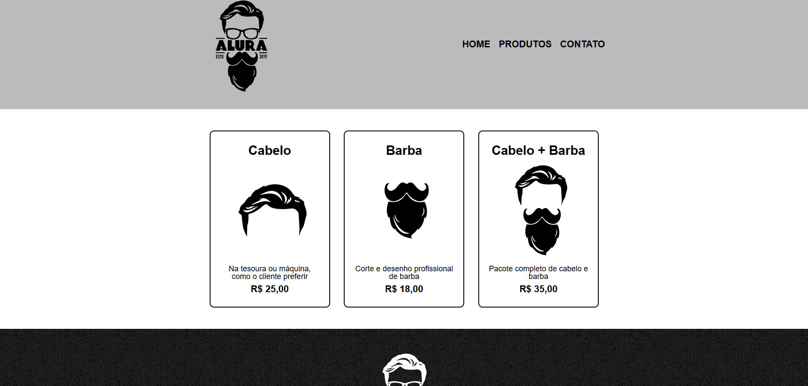
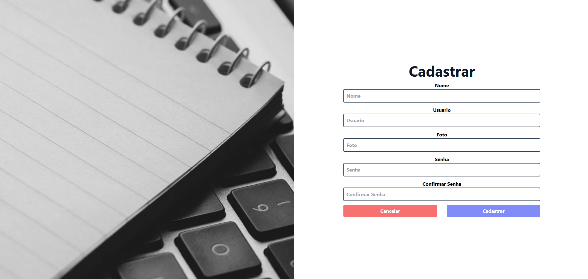
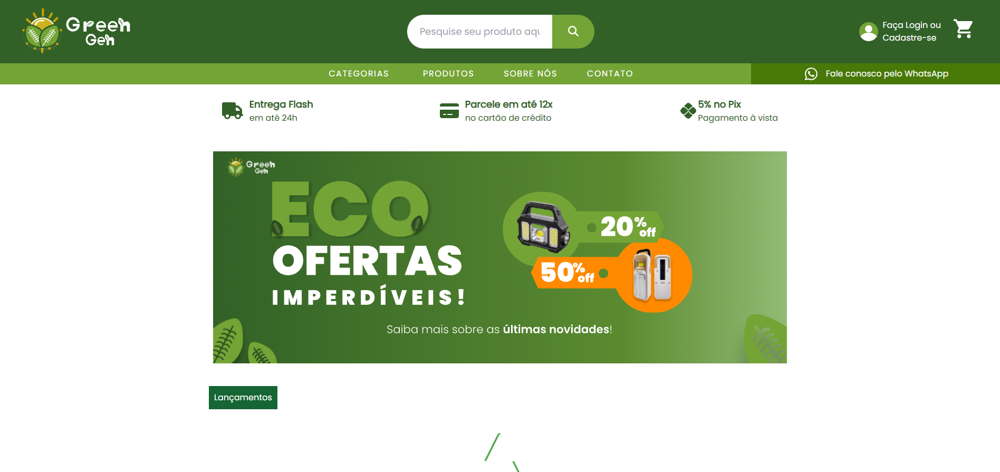

Olá, eu sou a
Dorivania
Desenvolvedora Full Stack em formação | Ciência da Computação
Profissional de Biologia em transição para a área de Tecnologia da Informação, com foco em desenvolvimento de software e soluções web.
Minha trajetória une análise de dados, pensamento investigativo e aprendizado contínuo para criar projetos úteis e bem estruturados.

Transição para TI
Da Biologia para o desenvolvimento de software, unindo pesquisa, análise e tecnologia.
Desenvolvimento Full Stack
Estudos e práticas com frontend, backend, banco de dados, Git, GitHub e IA.
Projetos em evolução
Projetos acadêmicos e pessoais criados para praticar lógica e desenvolvimento web.
Sobre mim
Sou uma profissional de Biologia em transição para a área de Tecnologia da Informação, com foco em desenvolvimento de software.
Atualmente, curso Ciência da Computação para aprofundar meus conhecimentos e aprimorar minhas capacidades técnicas. Tenho interesse em construir soluções digitais funcionais, acessíveis e bem planejadas.
Minha experiência anterior em projetos investigativos sobre comportamento animal contribuiu para o desenvolvimento de habilidades como análise, observação, organização, interpretação de dados e resolução de problemas.
Durante minha formação no Bootcamp da Generation Brasil, tive contato com o desenvolvimento Full Stack e participei da criação de projetos utilizando tecnologias como Java, Spring Boot, JavaScript, TypeScript, React, Git, GitHub e bancos de dados relacionais.
Também utilizo ferramentas de Inteligência Artificial como apoio no processo de aprendizado, pesquisa, organização de ideias e esclarecimento de dúvidas técnicas, sempre buscando compreender os conceitos e aplicar o conhecimento de forma prática.
Hobbies e interesses
- Gamer
- Assistir conteúdos sobre tecnologia
- Acompanhar novidades da área de TI
- Praticar projetos pessoais
- Aprender coisas novas
- Natureza
Formação
Bacharelado em Ciência da Computação - UNINTER
Curso em andamento, com estudos em programação, lógica, banco de dados, estrutura de dados e desenvolvimento web.
Bootcamp - Generation Brasil
Formação com foco em desenvolvimento Full Stack, prática em projetos, trabalho em equipe, comunicação e mentalidade de crescimento.
Bacharelado em Ciências Biológicas - USP
Formação anterior com experiência em pesquisa, análise de dados e projetos investigativos sobre comportamento animal.
Idiomas
Português: nativo
Inglês: em desenvolvimento
Habilidades
Frontend
HTML5, CSS3, JavaScript, TypeScript, React e Tailwind CSS.
Backend
Java, Spring Boot e APIs REST.
Banco de Dados
MySQL e PostgreSQL.
Ferramentas
Git, GitHub, VS Code, IntelliJ IDEA, Postman e Insomnia.
Competências
Análise de dados, comunicação, organização, resolução de problemas e trabalho em equipe.
Inteligência Artificial
Uso de agentes de IA para automações, apoio ao aprendizado, pesquisa e resolução de dúvidas técnicas.
Portfólio
Abaixo estão alguns projetos e exercícios desenvolvidos durante meus estudos.

Barbearia Alura
Site de uma barbearia mostrando os serviços oferecidos, hostória do local, formulário de contato e mapa de localização.

Blog Pessoal
O projeto consiste em um blog pessoal, no qual os usuários têm a capacidade de se cadastrar e criar uma conta. Uma vez logados, eles podem criar seus próprios temas e publicações.

GreenGen
Plataforma de e-commerce de produtos que utilizam energia solar. Site desenvolvido em grupo durante o Bootcamp da Generation Brasil.
Contato
Preencha o formulário abaixo para entrar em contato comigo.